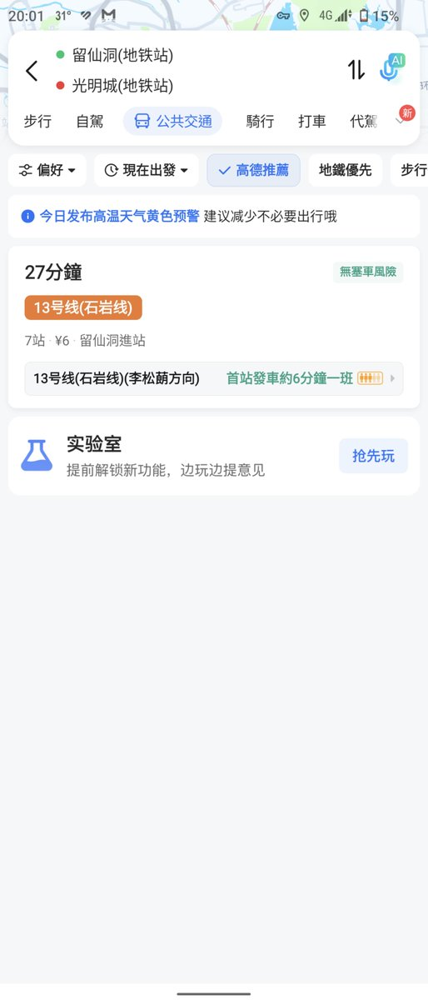

柠凉🍥🏳️⚧️
@NL8526
@AotraWong 那个实验室里有啥

Aotra Wong 芷姗
@AotraWong
我觉得我的脑子有点沉溺于雨晴……
想生气但是我不愿意生气
然后给自己气笑了
起初是想让她试试深铁用运通。结果发现，我不能和她一起出地铁了，因为往我那边怎么都来不及了……
血亏……
并且好巧不巧闸机刷不出去，人工处理的，现在还没有撤销预授权¥36…… https://t.co/9BTTGnyZYd